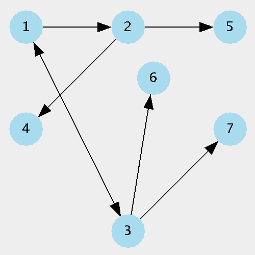
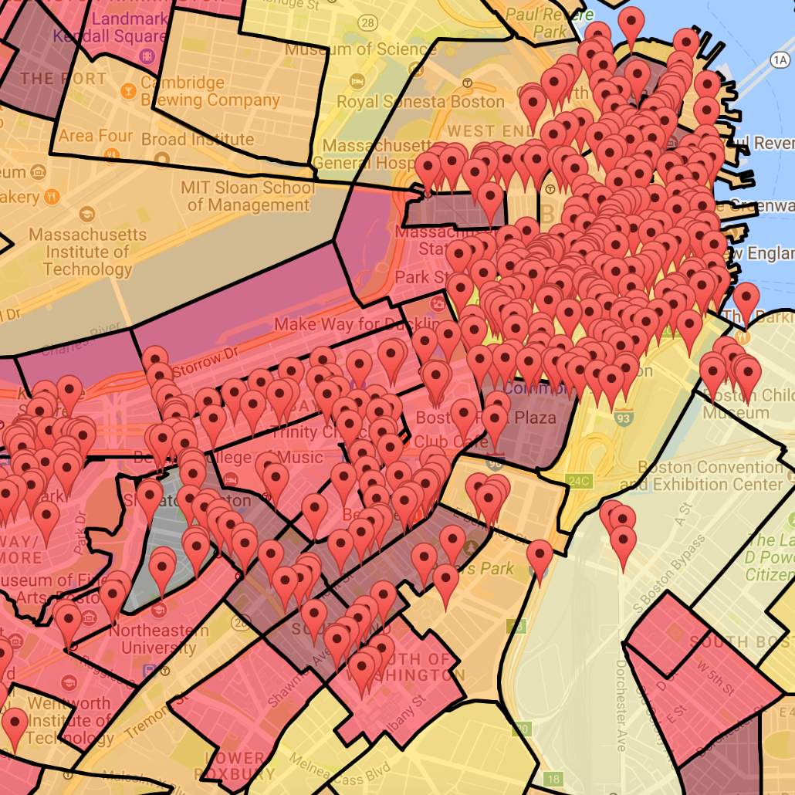
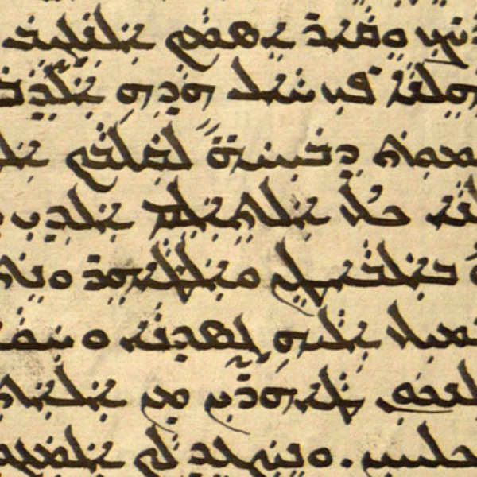

Projects
Graph GUI
Illustrates graph behavior with the ability to select, unselect, add, delete, and edit nodes and edges.
Coded in Java as my Data Structures final project.

Backslash Trash
Plots locations of trash cans in Boston compared to population density, showing where to build more. Built with Javascript & the Google Maps API.

Handwriting Recognition
Creates ground-truth documents in MATLAB from images of Syriac handwriting that will be used to
train a machine learning algorithm.
